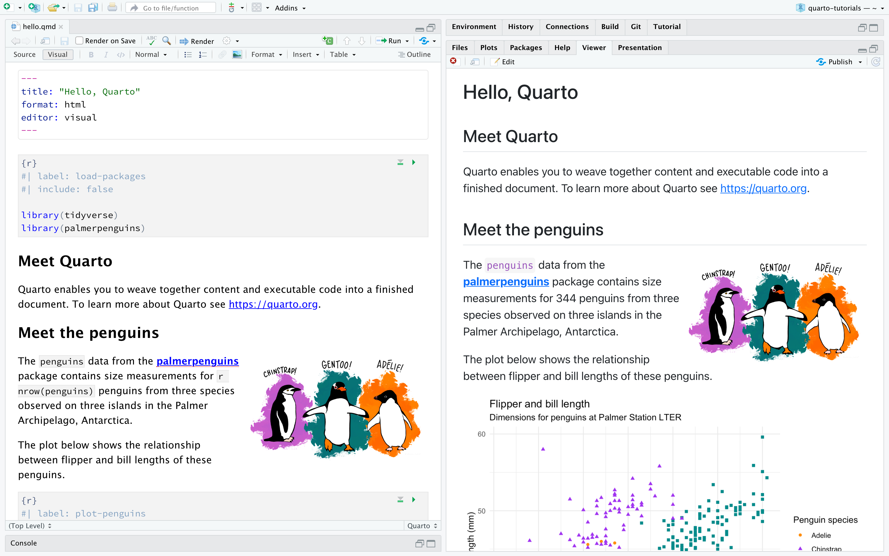

Introduction
Quarto is a powerful, multi-language publishing system designed to be the next-generation evolution of R Markdown. Posit PBC acquired RStudio in November 2022 and introduced Quarto, an enhanced dynamic and reproducible document creation tool, without plans to deprecate R Markdown or R Notebook. This ensures that long-time users of R Markdown can continue using their existing workflows while benefiting from Quarto’s expanded capabilities. Quarto provides seamless support for multiple programming languages, including R, Python, Julia, and Observable JavaScript, making it a flexible solution for data scientists, researchers, and analysts across different platforms. With a strong emphasis on accessibility and ease of use, Quarto maintains an interface and command structure nearly identical to R Markdown, allowing users to transition smoothly.
One of Quarto’s most notable strengths is its diverse output formats, enabling users to create high-quality PDFs, interactive websites, presentations, dashboards, and web applications. Its enhanced publishing options make it well-suited for producing technical reports, academic papers, books, and scientific journals. Additionally, Quarto integrates well with modern tools like GitHub Pages and Decap (Netlify), streamlining the process of sharing results with a broader audience. With these improvements, Quarto represents a significant step forward in dynamic document generation. It offers greater flexibility, multi-language functionality, and a wider range of publishing capabilities while retaining the familiarity of R Markdown for existing users.
Getting Started
To begin, let's open RStudio and take our first steps with Quarto. If you haven’t installed Quarto yet, make sure to download and install it from Quarto so that it integrates smoothly with RStudio. Once everything is set up, we’ll walk through the fundamental steps of configuring Quarto for the first time, creating a new document, and exploring its key features. You’ll learn how to structure your document using markdown, insert code chunks, and understand the rendering process that converts your file into a polished output. Before diving into PDF exports, we’ll first render our document to HTML—an easy way to preview our work quickly and make adjustments before finalizing it in other formats. Along the way, we’ll get comfortable with markdown syntax, which is used for formatting text, adding headers, creating lists, and embedding links or images. By the end of this introduction, you’ll have a solid foundation in Quarto, setting you up for more advanced features like interactive documents, dynamic reports, and even website creation.
